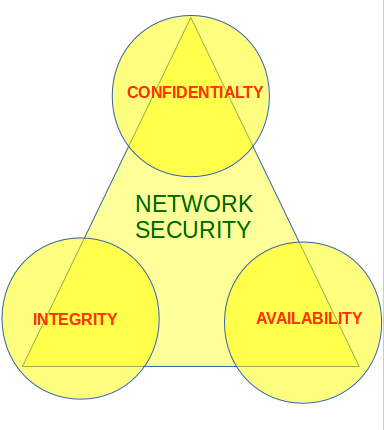
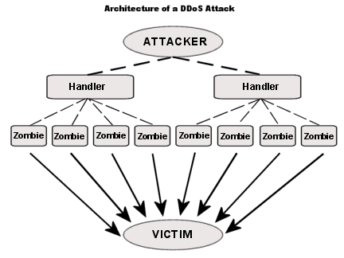

When talking about network security, the CIA triad is one of the most important model which is designed to guide policies for information security within an organization.
CIA stands for :
- Confidentiality
- Integrity
- Availability

These are the objectives which should be kept in mind while securing a network.
Confidentiality :
Confidentiality means that only the authorized individuals/systems can view sensitive or classified information. The data being sent over the network should not be accessed by unauthorized individuals. The attacker may try to capture the data using different tools available on the Internet and gain access to your information. A primary way to avoid this is to use encryption techniques to safeguard your data so that even if the attacker gains access to your data, he/she will not be able to decrypt it. Encryption standards include AES(Advanced Encryption Standard) and DES (Data Encryption Standard). Another way to protect your data is through a VPN tunnel. VPN stands for Virtual Private Network and helps the data to move securely over the network.

Image Source : Wikimedia
{kind=link}
Integrity :
The next thing to talk about is integrity. Well, the idea here is making sure that data has not been modified. Corruption of data is a failure to maintain data integrity. To check if our data has been modified or not, we make use of a hash function.
We have two common types : SHA (Secure Hash Algorithm) and MD5(Message Direct 5). Now MD5 is a 128-bit hash and SHA is a 160-bit hash if we’re using SHA-1. There are also other SHA methods that we could use like SHA-0, SHA-2, SHA-3.
Let’s assume Host ‘A’ wants to send data to Host ‘B’ maintaining integrity. A hash function will run over the data and produce an arbitrary hash value H1 which is then attached to the data. When Host ‘B’ receives the packet, it runs the same hash function over the data which gives a hash value H2. Now, if H1 = H2, this means that data’s integrity has been maintained and the contents were not modified.

Image Source : Wikimedia
{kind=link}
Availability :
This means that the network should be readily available to its users. This applies to systems and to data. To ensure availability, the network administrator should maintain hardware, make regular upgrades, have a plan for fail-over and prevent bottleneck in a network. Attacks such as DoS or DDoS may render a network unavailable as the resources of the network gets exhausted. The impact may be significant to the companies and users who rely on the network as a business tool. Thus, proper measures should be taken to prevent such attacks.

Image Source : Wikimedia
{kind=link}